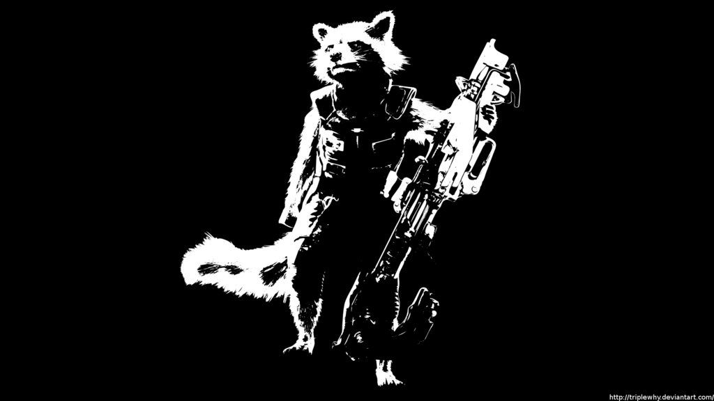

| Rocket-Raccoon | Rocket-Raccoon |
|---|---|
Mainly known as Rocket Raccoon, is a genetically enhanced creature and a member of the Guardians of the Galaxy. Alongside his friend and partner Groot, Rocket traveled the galaxy, committing crimes and picking up bounties until they met Star-Lord, who convinced them to assist him in selling the Orb for a massive profit. However, as it was discovered that the Orb being sought by Ronan the Accuser was one of the Infinity Stones, Rocket was convinced to risk everything to stop Ronan's plans to destroy Xandar. During the ensuing conflict, Rocket managed to assist his friends in destroying Ronan, despite Groot being killed. Rocket then became a member of the Guardians of the Galaxy alongside the newly planted baby Groot.Rocket continued working with the Guardians when they were hired by the Sovereign to slay the Abilisk. However, Rocket took the job as a way to steal Anulax Batteries with the intention to later sell them. This angered Ayesha, causing her to declare war on the Guardians and hire the Ravagers to capture them. Rocket and Groot were soon captured by Taserface under Yondu Udonta's command, forcing Rocket and Udonta to work together in order to break free and kill Taserface. During his time with Udonta, Rocket learned how to better himself and wishing to save his Guardians family, joined Udonta during the Battle on Ego's Planet. |
 |
The Guardians rescued Thor after the Asgardians were slaughtered by Thanos, who had resumed his quest for the Infinity Stones himself. The Guardians split up; while the rest of the team returned to Knowhere to find the Reality Stone, Rocket and Groot accompanied Thor to Nidavellir to obtain the weapon Stormbreaker. Using the Bifrost Bridge, the trio traveled to Earth to join the Battle of Wakanda, where he fought alongside Winter Soldier. Their efforts to stop Thanos were unsuccessful, and Rocket was one of the only Guardians to survive Thanos' subsequent mass slaughter, along with Nebula. Rocket joined the Avengers on their trip to the Garden, where Thor decapitated Thanos.